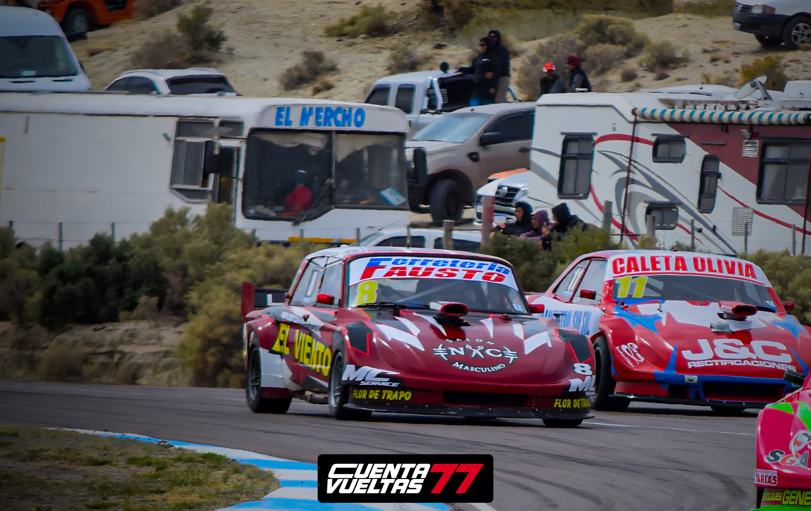

Javier Figueroa apuesta a sumar fuerte en la fecha doble del Turismo Carretera Austral

En la previa de la cuarta y quinta fecha del Turismo Carretera Austral, Javier Figueroa dialogó con Cuenta Vueltas 77 y compartió sus sensaciones de cara a un fin de semana especial, que marcará el cierre de la actividad antes del receso de la categoría.
El piloto santacruceño aseguró que llega con expectativas renovadas y con el objetivo de seguir sumando puntos importantes dentro de un campeonato en el que se mantiene entre los protagonistas.
“Con expectativa, con ganas de ir a un cierre de año que sea lo mejor posible y llegar lo más alto que podamos”, señaló.
Respecto a la preparación para la doble fecha, Figueroa explicó que las semanas previas estuvieron enfocados en realizar un repaso general del auto, revisando cada detalle para minimizar inconvenientes y llegar de la mejor manera posible a las dos finales programadas para el fin de semana.
Al analizar el presente deportivo del equipo, destacó que el balance del campeonato es positivo, aunque reconoció que distintas situaciones les impidieron obtener mejores resultados en algunas carreras.
“El auto está funcionando bien. Hemos tenido algunos problemas que nos fueron relegando, pero venimos siendo competitivos”, comentó.
Sobre el desafío que representa afrontar una fecha doble, Javier explicó que, en su caso, la estrategia no cambia demasiado respecto a una carrera convencional, ya que el formato del fin de semana no contará con series y estará centrado en las clasificaciones y las dos finales.
Además, remarcó la importancia de seguir trabajando sobre el auto durante el receso para continuar evolucionando de cara a la segunda parte de la temporada.
Al cierre de la entrevista, Figueroa agradeció el acompañamiento de sponsors, colaboradores, amigos y familiares, quienes permiten que el equipo pueda estar presente fecha tras fecha dentro de la categoría.
Este fin de semana, el Turismo Carretera Austral disputará la cuarta y quinta fecha del campeonato en el autódromo General San Martín de Comodoro Rivadavia, en una cita que será clave antes del receso y que volverá a reunir a los protagonistas de la categoría en un intenso fin de semana de actividad.